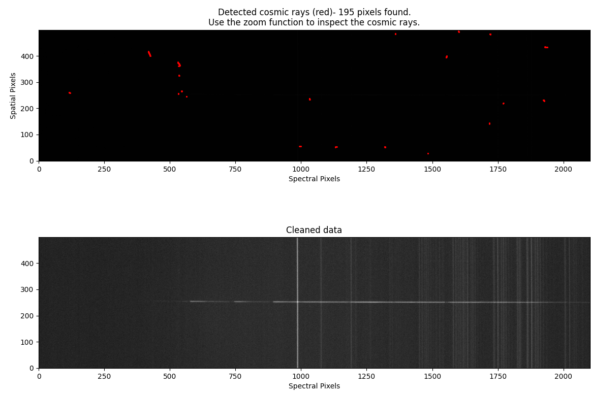
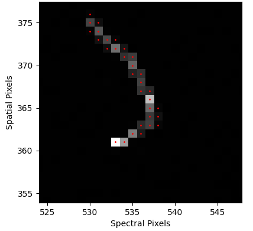
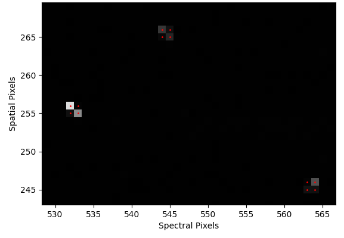

Cosmic ray removal¶
Quick start¶
The cosmic ray removal procedure is called with the command:
pylongslit_crr PATH_TO_CONFIG_FILE
The procedure will remove cosmic rays from all reduced frames in the output directory specified in the configuration file. If the files are already cosmic - ray corrected, the procedure will skip them. If you want to retry the cosmic ray removal, you have to run the reduction procedure again.
Quality Assesment¶
The procedure will show the frame with the detected cosmic rays marked, and the frame after cosmic ray removal:
{kind=link}
The first thing to look-out for is the object or bright sky-lines being mistakenly marked as a cosmic ray.
If this happens, you can increase the "objlim" parameter in the configuration file.
If your image increases in clarity after cosmic-ray removal, it is usually a
sign of a succesfull procedure, as the very bright cosmic rays are no longer
offsetting the colormap.
You can use the zoom tool of the plotting window to zoom in on the marked cosmic rays, and check whether the detection was succesfull. Some examples from the SDSS_J213510+2728 dataset:
 {kind=link}
{kind=link}
If you hoover your mouse over the marked cosmic rays, you can see the pixel count value in the corner of the plotting window. Cosmic rays should have a count value of several order of magnitudes higher than the surrounding pixels.
Parameter options¶
The method used for cosmic-ray removal is taken from Astro-SCRAPPY .
You can set 4 parameters for the cosmic-ray removal, and you can set them differently for science and standard star frames (this is often needed, as standard star frames usually have a lot more signal, but much shorter exposure times). The parameters are (with example values):
"crr_removal" : {
"science":{
"frac": 0.3,
"objlim": 6,
"sigclip": 6.0,
"niter": 2
},
"standard":{
"frac": 0.3,
"objlim": 4,
"sigclip": 4.0,
"niter": 3
}
},
"frac": Fractional detection limit for neighboring pixels. For cosmic ray neighbor pixels, a lapacian-to-noise detection limit of sigfrac * sigclip will be used.
"objlim": Minimum contrast between Laplacian image and the fine structure image. Increase this value if bright objects are flagged as cosmic rays.
"sigclip": Laplacian-to-noise limit for cosmic ray detection. Lower values will flag more pixels as cosmic rays.
"niter": Number of iterations of the LA Cosmic algorithm to perform.
These explanations are taken from the Astro-SCRAPPY documentation . Consult the documentation for more information.
For users new to data reduction - short introduction to cosmic ray hits on a CCD detector¶
Cosmic rays are high-energy particles that hit the Earth from outer space. When they hit the CCD detector, they can cause a spike in the pixel count value for a localised area. This can be problematic in data processing, as these hits are statiscally very strong outliers, and they can corrupt fits, modelling and any statiscial calculation on the data. Therefore, cosmic rays are best removed from the data. Exposure time is the key element in whether cosmic rays are a problem or not - the longer the exposure time, the more likely a cosmic ray will hit the detector. Therefore, you must pay special attention to cosmic rays when reducing long exposure time frames - for shorter exposure times, cosmic rays will usually be very few (but still best removed).